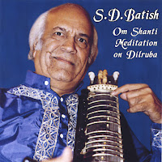

हम सबने फिल्म “बरसात की रात” की मशहूर कव्वाली “ना तो कारवां की तलाश है” सुना ही है, उसे कई महान गायकों ने गाया है लेकिन उनमें एक स्वर ऐसा भी है जिनके हिस्से कुछ ही लाईनें आई है, लेकिन वे उतने में ही कमाल कर देते हैं- यह स्वर हैपंडित शिव दयाल बातिश जी का जिन्हें हम एस डी बातिश के नाम से भी जानते हैं।



1952 में बेताब फिल्म में संगीत दिया एवं संगीतबद्ध फिल्म बेताब में “देख लिया तूने गम का तमाशा गीत गाया”। बहू बेटी फिल्म में एक गीत “मोसे चंचल जवानी संभाली नाही जाए” उस जमाने के हिसाब से अश्लील होने की वजह से हटा दिया गया। तलत महमूद से उनके सर्वश्रेष्ठ गीतों में से एक “खामोश है सितारे और रात रो रही है” (हार जीत-1954) गवाया। इस फिल्म में प्यारेलाल (लक्ष्मीकांत-प्यारेलाल) उनके सहायक थे।
तूफान 1952 में “जलाकर आग दिल में जिंदगी बरबाद करते हैं, न हंसते हैं नरोते हैं न कुछ फरियाद करते हैं” एवं “दुनियां शिकायत कौन करे अरमान भरा दिल टूट गया ये कौन आया चुपके चुपके खु्शियों के चमन को लूट गया” बहुत ही सुंदर गीत संगीतबद्ध किए और गाए ।
शास्त्रीय संगीत के प्रकांड विद्वान बातिश जी ने भजन, गीत, गज़ल, ठुमरी एवं फिल्म संगीत सभी गाए लेकिन उनको संगीत जगत ने उन्हें बहुत जल्दी भूला दिया। आजकल रेडियो पर न उनके गाए गीत सुनाई देते हैं न उनके संगीतबद्ध ही!
आज मैं उनकी गाई हुई एक गैर फिल्मी “दायम पड़ा हुआ तेरे सर पर नहीं हूं मैं” गज़ल सुना रहा हूँ जिसे लिखा है “मिर्ज़ा गा़लिब” مرزا اسد اللہ خان ने और संगीतबद्ध किया स्वयं एस डी बातिश ने।
दाईम पड़ा हुआ तिरे दर पर नहीं हूँ मैं
खाक़ ऐसी जिन्दगी पे के पत्थर नहीं हुँ मैं
क्यों गर्दिशें मदाम से घबरा ना जाए दिल
इन्सानहूँ हाय इन्सान हूँ पियाला-ओ-सागर नहीं हूँ मैं
रखते हो तुम कदम मेरी आँखों से क्यूँ दरेग
रुतबे में मेहर-ओ-माह से कमतर नहीं हूँ
करते हो मुझ को मना-ए-क़दम बोस किस लिए
क्या आसमां के भी बराबर नहीं हूँ मैं
एस डी बातिश के संगीतबद्ध एवं गाए हुए अन्य गीतयहाँ सुने।
दाइम-दायम =eternal गर्दिश-ए-मदाम eternal movementहमेशा होने वाली गर्दिश या चक्कर
दरेग =hesitation /संकोच ,मेहर-ओ-माह- सूरज-चाँद , बोस-बोसा- चूमना
अर्थ रेख़्ता के सौजन्य से